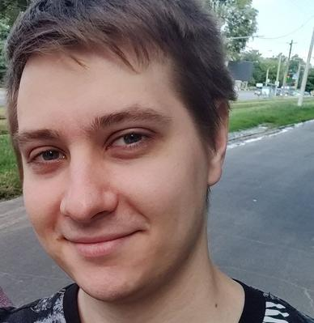

Maksym Panchenko
QA Engineer

Summary
Over 2 years of experience in manual testing, encompassing Web and Desktop
applications.
- Experienced in API testing, UI testing, and Database Testing.
- Familiarity with REST API.
- Experienced in tools such as Jira, Confluence, GIT, and Oracle VM.
- Basic knowledge of SQL.
- Skilled in executing common Test Design techniques, including boundary value
analysis and equivalence partitioning.
- Capable of creating and maintaining test documentation, including test cases,
checklists, and bug reports.
- Well-versed in software development methodologies, bug lifecycles, and models.
- Experience in analyzing and testing requirements.
- Strong teamwork and communication skills.
- Self-motivated with a passion for learning new technologies and tools.
- Open to learning and working with experienced mentors to enhance skills and
knowledge.
Education
- Institution: H.S. Skovoroda Kharkiv National Pedagogical University
- Dates Attended: September 2010 - August 2014
- Qualification(s): Bachelor's degree in English language
- Major Subject(s): English language and literature
Work Experience
GlobalLogic
Duration: February 2023 - Present (8 months) Role: Junior QA Engineer
- Project Description: Part of a team involved in testing and verifying the
functionality of a mapping and navigation application and its data.
- Responsibilities: Creating and supporting project-related documentation.
Presenting demos for the Customer. Executing project-related Python scripts to
proceed with data. Testing application and its data.
- Technologies: ExifTool, Qgis, Agol, SQL, Python scripts execution, working with
GNSS logs (GPX, KML, NMEA).
Duration: May 2022 - February 2023 (10 months) Role: Junior QA Engineer
- Project Description: Worked on projects in the healthcare sector, specifically on
Medical Desktop and Medical Information Transfer systems. These systems
enable report downloads, storage, review, and data entry for quality assessment
and system performance analysis.
- Responsibilities: Test case creation and execution, analysis and testing of
requirements. Both hardware and software testing of the medical devices.
- Technologies: Oracle Virtual Box, SQL, Python scripts execution.
Duration: Jan 2022 - May 2022 (5 months) Role: Associate QA Engineer
- Project Description: Contributed to a web-based healthcare project involving
transferring data from devices to an external machine. This project also included
intermediate communication services and gateways for device data transmission
between Medical Desktop systems over the Internet.
- Responsibilities: Test case creation and execution.
- Technologies: GIT, API testing, Emulator (Postman), Python scripts execution.
Skills
Quality Assurance: Black Box Testing, Microsoft SQL Server, SQL, Atlassian
software (Confluence, HelpDesk, etc.), System Verification, Formal verification
(Experienced in Formal/Dry runs), Functional Verification/Testing, Bug Tracking
(Jira), Software Testing.
Certifications
Hobbies
Table tennis, dog lover
Other